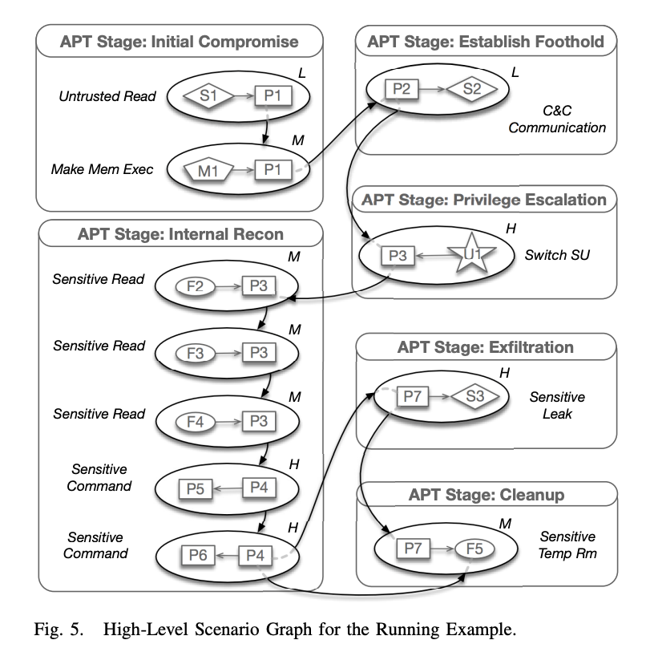

APT溯源图构建-论文阅读第一篇-HOLMES: Real-time APT Detection through Correlation of Suspicious Information Flows
本系列记录一些关于APT溯源构建provenance graph的论文阅读笔记。旨在学习论文中的一些idea。
Overview
这篇论文亮点是引入一个中间层把低维度的审计日志（通常它他们是各个程序的syscall日志），映射到高纬度的APT kill chain信息。
高纬度kill chain
引入中间层TTPs, HSG
此外还引入了一些剪枝的策略
- We show how this concept can help to assess the strength of dependencies between HSG nodes. Weak dependencies can then be pruned away to eliminate many false alarms.
- Second, we develop noise reduction techniques that further de-emphasize dependencies that are known to be associated with benign activities.
- Third, we develop ranking and prioritization techniques to prune away most nodes and edges unrelated to the APT campaign.
TTPs(Tactics, Techniques and Procedure)的构建
from Audit Logs，会引入一些规则，比如下面这个例子。
会引入一些规则，比如有监控到read的系统调用，从非信任IP读取数据，那么就把它记做一个Unstrusted_Read(S, P)对。S是socket, P是进程。
如果有一个P, 他申请了可执行的内存，并且这个P和Unstrusted_Read(S, P’)中的P’有关系（path_factor）那么，就把这个P加入Make_Mem_Exec(P,M)对中。
注：path_factor怎么算后面会讲。
上面的两个Make_Mem_Exec和Make_Mem_Exec会被归为高纬度，对应APT kill chain的Initial_Compromoise。
HSG(high-level scenario graph)的构建
这部分其实很简单，每一个TTP是一个小节点，节点之前是否连线就是他们是否有prerequisites里面的关系。
ATP Stage是一个大节点。

HSG剪枝技术
Avoiding Spurious Dependencies
这里引入了弱关联和强关联的概念，比如下图的中nginx error.log。cat和nginx就是弱关联，可能黑客通过nginx入侵过程中产生了一些日志，然后被管理员用cat读到了。
所以作者在这里形式化的引入一个ancestral cover AC(f)，它是由∀p ∈ f ∃a ∈ AC(f) a = p or a is an ancestor of p 所定义。
一个信息流f的每一个p，把这个p和它的祖先进程都加入一个集合，这个集合就是AC(f)。接着引入一个ACmin(f)的概念代表size最小的AC(f)。
注：这里类似于一个最大公约数的概念，如果nginx和cat由一个共同的祖先进程那么ACmin(f)就是1。显然这里nginx和cat并没有，所以ACmin(f)就是2。
因为一个node1到另一个node2可能有多条路径，f1, …, fn。每一个，路径都会有一个ACmin(f)，而这些ACmin(f)中最小的那个值就是上面path_factor想表达的东西。
path_factor(N1, N2) = minimum AC(f) of per path。
评论：看下来就是判断两个进程是否有共同的祖先，不知道为什么要搞得这么复杂。
Noise reduction based on benign prerequisites.
作者认为一些长时间运行的良性进程可能也会触发TTP的规则，所以他会预先观察程序在良性环境情况触发TTPs的情况然后加成规则排除他们。
但是这样其实又会引入漏报，比如万一真的nginx在启动时会读/etc/passwd，然后他被当白样本学习了，造成黑客真的打进来的时候被忽略。
所以作者又提出，可以根据从/etc/passwd读出的大小来判断 -> 读一次时正常，老是读就不正常了。
评论：感觉这就是一个笨办法，需要一个进程case by case的优化。
Signal Correlation and Detection
因为kill chain有7步，所以会根据每一步最大的那个risk level，放进元组<S1, S2, S3, …, S7>
然后根据这个元组算出一个分。
基于两个主要标准设计的：(1) 灵活性和定制化，以及 (2) 随着步骤展开，APT步骤的相关性反映在分数的放大上。
评论：这一步看起来还挺科学的
完整的TTPs
APT溯源图构建-论文阅读第一篇-HOLMES: Real-time APT Detection through Correlation of Suspicious Information Flows